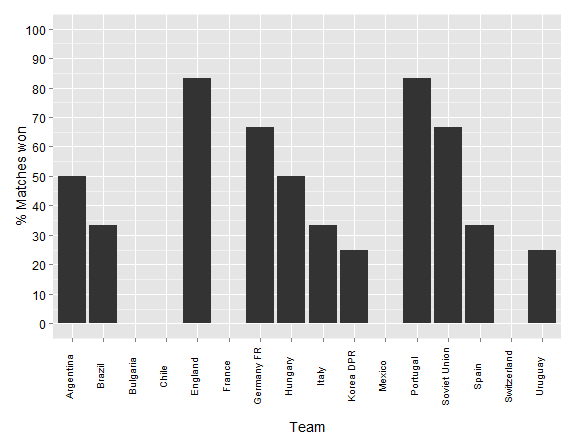

- Aim: To produce a simple R Shiny application
- Concept: An application that displays the percentage of matches won in the Football World Cup
- Detail: The data will be displayed as: a) A plot of percentage wins by all countries within a tournament; or b) A plot of percentage winds by a single country across all years
- Data downloaded from: http://www.theguardian.com/news/datablog/2010/may/05/world-cup-historical-statistics
Football World Cup data
Percentage wins
MD
Slide 2: Background
Slide 3: Example plot of each countries' performance within a tournament (e.g. 1966)

Slide 4: Example plot of a single country (e.g. England) over all the year of the World Cup (data: 1930 - 2006)